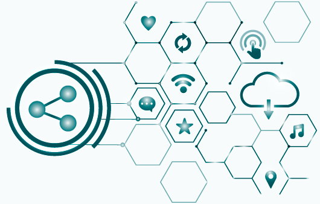

Good trade
Responsive web design
Good trade was born from the need of two types of users
- People who have recently finished their studies and need a job, and
- Non-profit organizations that need to realize digital projects.
The process
Methodology
Main tools
UX
- Desk research
- Lean survey canvas
- Surveys & interviews
- Competitive analysis
- Blueprint strategy
- User journey - user flow - user stories
- Heuristic evaluation
- MosCow
UI
- Moodboard
- Crazy 8
- Wireframing
- Visual benchmark
- Atomic design
- Design system
- Mid-fi prototype
- Hi-fi prototype
- Zeroheight
Research
Insights
Exponential growth of cyber volunteers after Covid-19
Traditional NGOs and associations have had to adapt their usual mode of action to digital
90%
Of respondents who have volunteered would repeat the experience
Of those surveyed who would like to volunteer prefer to do something punctual.
95%
98%
Of respondents who have volunteered would repeat the experience
Users
Alex, 31 years, video editor
I’d love to volunteer, but I don't wanna make a commitment or travel long distances
I am looking for a job but I have no real experience to show in my portfolio.
Non-profit organization
We need digital profiles to help us carry out projects that we can't afford
Define & ideate
Blueprint strategy - Define phase
People with digital profiles need:
- Gain experience in their specialization
- Present real projects in their portfolio
- To be able to help organizations that share the same values
- Do occasional volunteer work that does not require traveling long distances
Organizations need:
- Keep pace with the digital age to stay afloat
- Create an image of trust
- Increase the number of digital volunteers to carry out specific projects
- Committed volunteers who share the same values